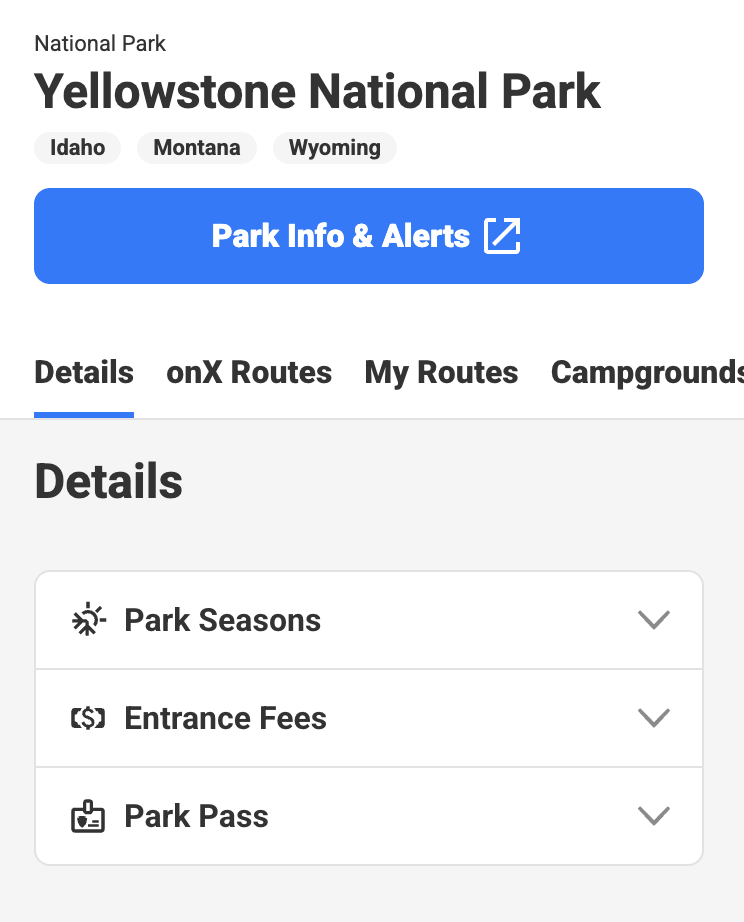
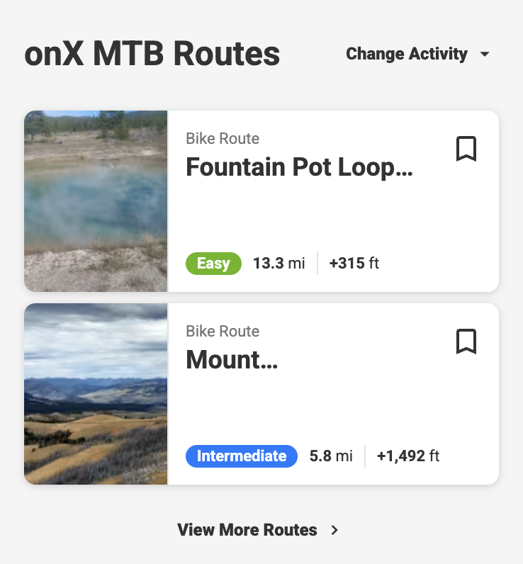
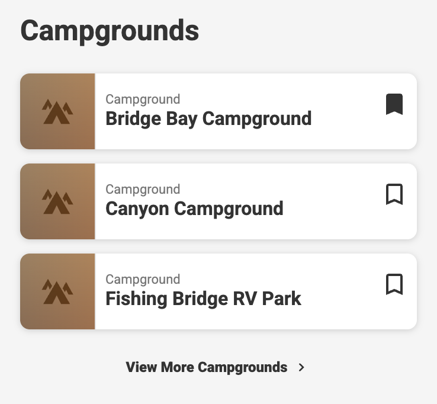
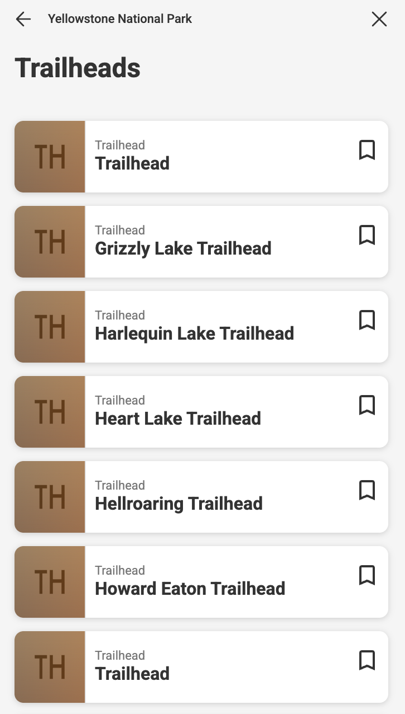

Project overview
During my internship at onX Maps, I helped build out the National Parks card for the onX Backcountry web map. I contributed across the feature—from park details and map interactions to routes, campgrounds, trailheads, and favoriting—and my work was shipped to the development branch.
The card brings useful park information into the map experience. Visitors can explore park details and related outdoor destinations without losing the context of the map.
Feature walkthrough

Screenshots




What I worked on
- Built the park details, routes, campgrounds, and trailheads tabs.
- Added routes pagination and “view more” behavior, including infinite scrolling across route types.
- Implemented park-card interactions including map-tap handling, park state metadata, an overflow menu, and an external link.
- Designed and iterated on a new set of National Parks icons.
- Added reusable campground favorite logic and National Parks favoriting.
- Added feature-flagged map highlighting for National Parks.
- Backfilled component tests and resolved TypeScript issues while integrating work across parallel contributions.
Tools and techniques
- Vue and TypeScript: building web-map UI and tightening types in components and tests.
- GraphQL and Apollo Studio: developing and validating queries for routes, campgrounds, and trailheads against the supergraph schema.
- Composable logic: extracting campground favorite behavior into reusable, testable code.
- Feature flags: gating National Parks map for employees only (until ready for public release- which is live as of 11/11/26).
- Automated tests and Git: improving test coverage and resolving conflicts as related work landed in shared components.
What I learned
This project deepened my experience working with a GraphQL supergraph, writing reusable composables, and treating test health and feature flags as part of feature development. Coordinating changes across several parallel workstreams also taught me to review merge conflicts carefully and keep branch scopes focused.